Capítulo 5 – Ascendência Vale
A ascendência Vale é marcada pelo trabalho técnico, pela vida profundamente ligada aos rios amazônicos e pela responsabilidade daqueles que sustentaram suas famílias com esforço, disciplina e conhecimento prático. Trata-se de uma linhagem que contribuiu de forma decisiva para a formação do caráter e da identidade das gerações seguintes, especialmente em regiões onde o trabalho diário, a honra e a perseverança eram fundamentos da vida familiar. Em cada geração, percebe-se que o esforço nunca faltou. A história revela, contudo, que esforço e estrutura nem sempre caminham juntos — e que o que não é protegido tende a se dispersar com o tempo. “O sábio edifica a sua casa, mas o insensato a derruba com as próprias mãos.” A construção não é apenas física; é também moral e estrutural.
Valdir Santos do Vale
 Valdir Santos do Vale
Valdir Santos do Vale
Valdir Santos do Vale nasceu em 21 de junho de 1939, em Tarauacá, no estado do Acre. Ao longo de sua vida, destacou-se como mecânico naval, profissão essencial em uma região onde os rios representam caminhos, sustento e ligação entre comunidades. Seu trabalho exigia precisão, confiança e profundo conhecimento técnico, tornando-o uma figura respeitada em seu meio e reconhecida por sua responsabilidade profissional. Os rios ensinam que força move embarcações, mas direção evita naufrágios. “Melhor é o homem paciente do que o guerreiro, e o que domina o seu espírito do que o que toma uma cidade.” Há batalhas externas visíveis e batalhas internas silenciosas; as segundas definem o destino das primeiras.
Valdir era filho de João Vieira do Vale e de Oscarina Santos do Vale. Herdou de seus pais valores como disciplina, organização e dedicação ao trabalho, que nortearam sua trajetória pessoal e profissional. “O filho sábio alegra a seu pai.” Valores transmitidos tornam-se herança invisível. Ainda muito jovem, enfrentou mudanças profundas em sua estrutura familiar. A ausência precoce do pai alterou o rumo natural da casa. “Ensina a criança no caminho em que deve andar, e ainda quando for velho não se desviará dele.” O caminho precisa de presença constante; quando ela falta, o percurso torna-se mais árduo. A história mostra que perdas precoces exigem maturidade antecipada — e que nem sempre a alma acompanha a responsabilidade que o tempo impõe.
No âmbito familiar, Valdir Santos do Vale uniu-se a Raimunda Maria da Silva Bentes quando ela ainda era muito jovem, com apenas 14 anos de idade — realidade presente em determinados contextos históricos e regionais, nos quais muitas mulheres assumiam precocemente responsabilidades familiares. Dessa união nasceram seus filhos: *Ana Oscarina, Edite, Ieda, Pedro, Emanuel, Marcos e André*, que deram continuidade à linhagem Vale e fortaleceram os laços entre as famílias Vale e Bentes. Algumas gerações aprenderam cedo que sustentar é diferente de permanecer. E que presença não se mede apenas pelo nome, mas pela constância. “O que anda em integridade anda seguro.” A segurança verdadeira não depende apenas de circunstâncias, mas de coerência interior.
João Vieira do Vale
João Vieira do Vale nasceu em 1918, no estado do Amazonas. Foi um homem de grande prosperidade em Tarauacá, destacando-se como comerciante, agricultor e servidor da prefeitura local. Construiu sua vida a partir da terra, da criação e da atividade seringueira, integrando trabalho, resistência e organização familiar, além de manter atividade comercial ativa. Viajava com frequência para Manaus, onde buscava mercadorias que posteriormente eram vendidas em Tarauacá, fortalecendo seu comércio e sua posição econômica na região. “Os planos bem elaborados conduzem à fartura.” Trabalho é essencial; planejamento preserva.
Homem trabalhador e organizado, João era reconhecido como um bom pai, bom genro e bom filho. De porte alto, moreno e de nariz afilado, faleceu precocemente em 1949, aos 31 anos de idade. Na ocasião de sua morte, seu filho Valdir tinha apenas dez anos, e sua filha Valdira, nascida em 1940, era ainda muito jovem. Em 2026, Valdira alcançou 86 anos de idade, preservando viva a memória e o legado paterno. “Ensina-nos a contar os nossos dias, para que alcancemos coração sábio.” O tempo é breve; sabedoria é aprender com ele antes que passe. A história ensina que construir é virtude. Proteger o que se constrói é responsabilidade que atravessa gerações. “O homem bom deixa herança aos filhos de seus filhos.” Herança não é apenas posse; é continuidade organizada.
João Vieira do Vale casou-se em 1939, aos 19 anos de idade, com Oscarina Santos do Vale, que era quatro anos mais velha e havia sido sua professora. Oscarina nasceu em 1914 e, à época do casamento, tinha 23 anos. A união deu início a uma família construída sobre valores sólidos de respeito, educação e trabalho, princípios que se refletiram de forma consistente nas gerações seguintes. “A casa e os bens vêm dos pais.” Mas a administração deles define o futuro.
Oscarina Santos do Vale
Oscarina Santos do Vale fazia parte de uma família numerosa. Era irmã de Dorvalina, Eulina, Jovelina, Carmelina, Francisca, Carolina e José Ubaldo. José Ubaldo, nascido em 1935, encontra-se com 91 anos de idade em 2026, representando um importante elo vivo da memória familiar e da continuidade histórica dessa linhagem. Oscarina faleceu em 1997, aos 83 anos de idade, deixando um legado de dedicação à família e à educação. “A mulher sábia edifica a sua casa.” Existem estruturas que se sustentam pela força silenciosa da dedicação diária.
João Vieira do Vale também integrava uma família numerosa. Era irmão de Zefa, Tonha, Chico, Toinho, Benedito e Mundico, vínculos fraternos que ajudaram a consolidar o sobrenome Vale como referência de união familiar, trabalho e respeito comunitário. “Oh! Quão bom e quão suave é que os irmãos vivam em união.” A união preserva aquilo que a divisão enfraquece.
Antônio Vieira do Vale
Pela linha paterna, Valdir Santos do Vale era neto de Antônio Vieira do Vale e de Carmina Vieira dos Santos, esta natural do estado do Pará. Considerando a cronologia familiar, é provável que ambos tenham nascido entre 1890 e 1895, período compatível com o nascimento de seu filho João em 1918. Essa origem revela a integração de diferentes territórios amazônicos na formação da família Vale. “Deus fez de um só sangue todas as nações.” As raízes se entrelaçam para formar identidades mais amplas do que imaginamos.
Pela linha materna, Valdir era neto de Deodato Ferreira dos Santos e de Jardelina Maria dos Santos, sendo Jardelina natural do estado do Ceará. Estima-se que ambos tenham nascido entre 1885 e 1894, faixa etária compatível com o nascimento de Oscarina em 1914. Essa linhagem amplia as raízes familiares, unindo diferentes regiões do país e fortalecendo a identidade transmitida ao longo das gerações. “Há caminho que parece direito ao homem, mas o seu fim são caminhos de morte.” Discernimento é herança tão necessária quanto qualquer bem material.
Assim, a ascendência Vale se integra de forma sólida à árvore genealógica da família Nascimento & Vale, representando o trabalho honesto, a habilidade técnica, o espírito empreendedor e a força daqueles que, com esforço diário e dignidade, ajudaram a construir o caminho percorrido pelas gerações atuais. “Tudo tem o seu tempo determinado.” Há tempo de plantar, tempo de perder, tempo de reconstruir — e tempo de compreender. E como todo caminho construído antes, também este convida os que vêm depois não apenas a lembrar, mas a discernir. Memória preserva. Entendimento orienta. Sabedoria protege.
 Almoço com Zé Ubaldo
Almoço com Zé Ubaldo
 Ana, Cleame, Emanuel, Ieda e Pedro
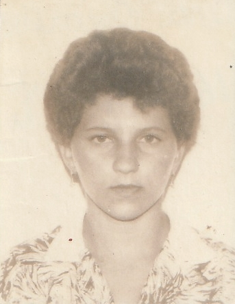
Ana Oscarina
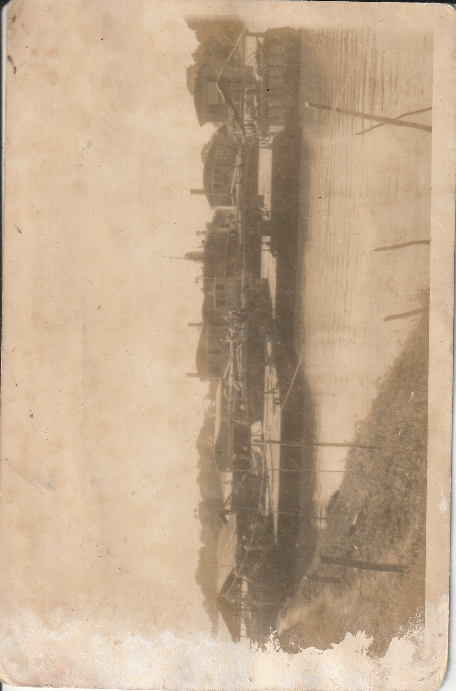
Balsas. Ambiente de trabalho de Valdir
Ana, Cleame, Emanuel, Ieda e Pedro
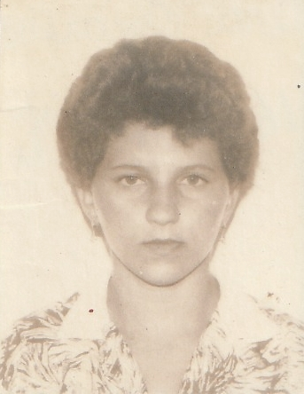
Ana Oscarina
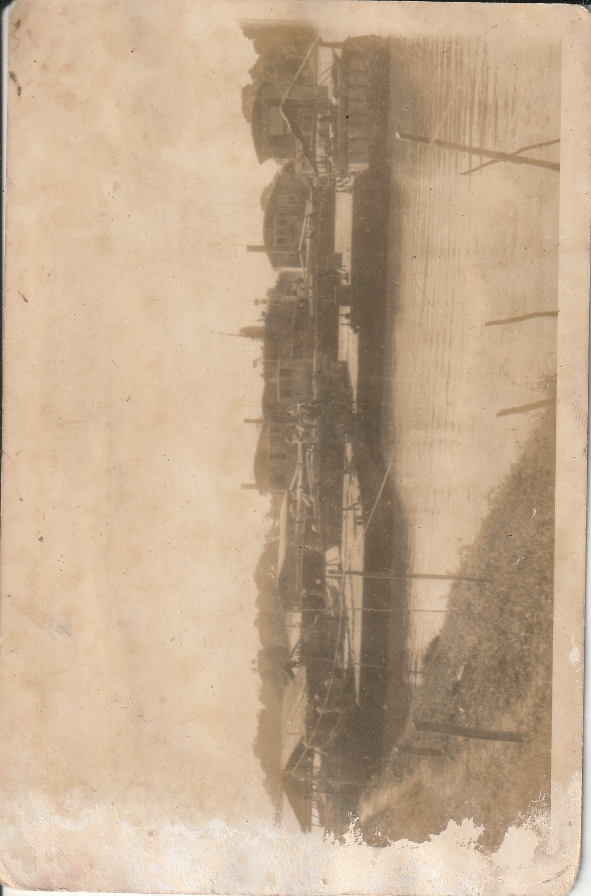
Balsas. Ambiente de trabalho de Valdir
 Barco Petrobrás. Ambiente de trabalho de Valdir
Barco Petrobrás. Ambiente de trabalho de Valdir
 Carolina e Zé Ubaldo
Carolina e Zé Ubaldo
 Chiquinha, Eulina, Jovelina, Nenzinha, Jovelina.jpeg
Chiquinha, Eulina, Jovelina, Nenzinha, Jovelina.jpeg
 Domingos Sávio, Raimunda na Cadeira, Ieda no colo e Ana Oscarina ao lado
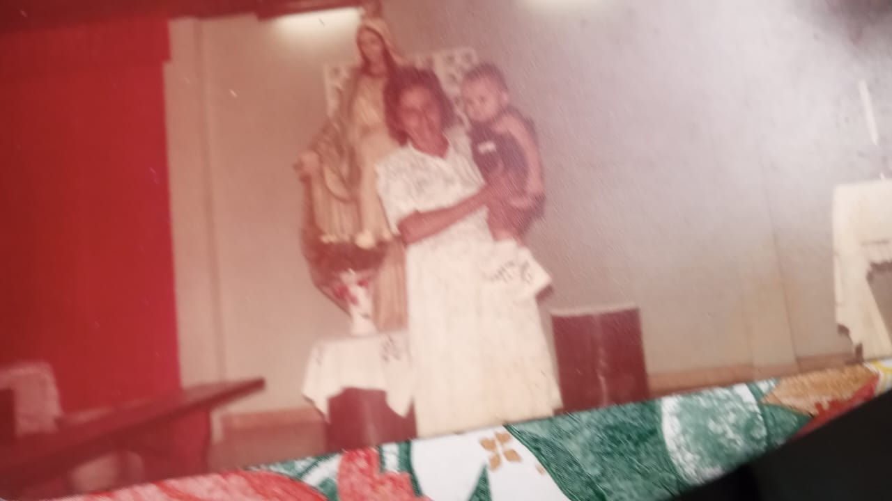
Dorva
Domingos Sávio, Raimunda na Cadeira, Ieda no colo e Ana Oscarina ao lado
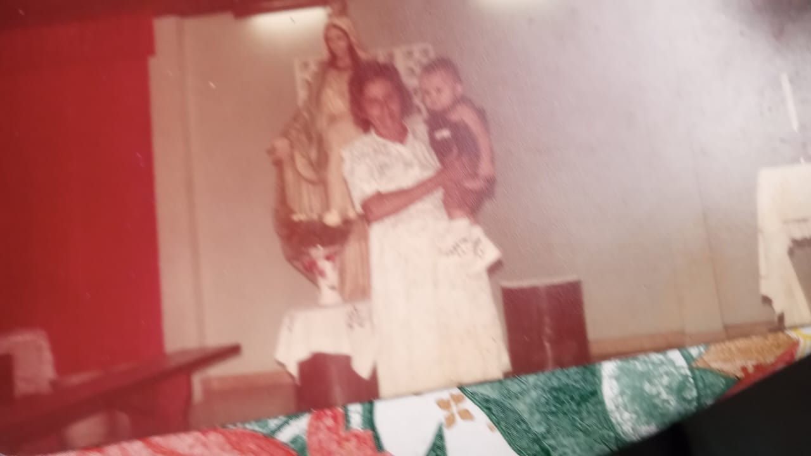
Dorva
 Emanuel e Ana Oscarina
Emanuel e Ana Oscarina
 Eulina, Oscarina e Jovelina
Eulina, Oscarina e Jovelina
 Ieda, Cleame, Ana, Emanuel e Pedro na Praça da Matriz - Manaus
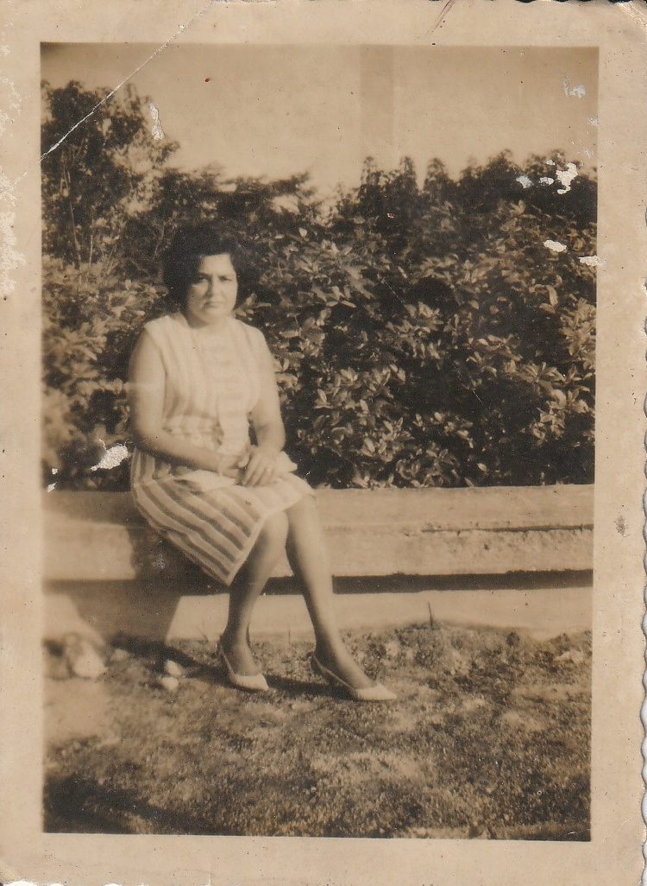
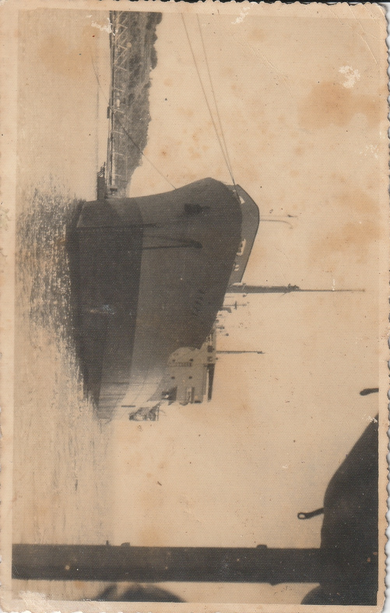
Navio. Ambiente de trabalho de Valdir
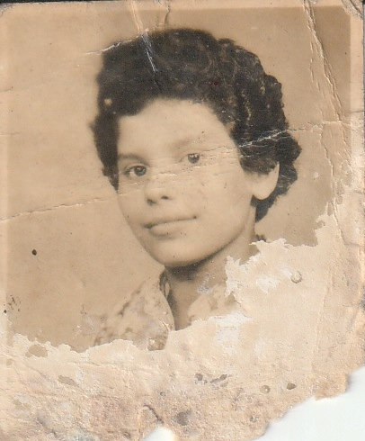
Nena
Ieda, Cleame, Ana, Emanuel e Pedro na Praça da Matriz - Manaus
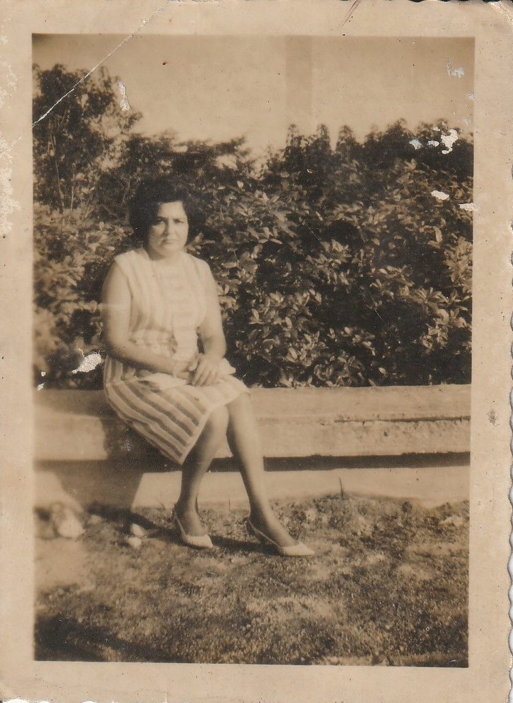
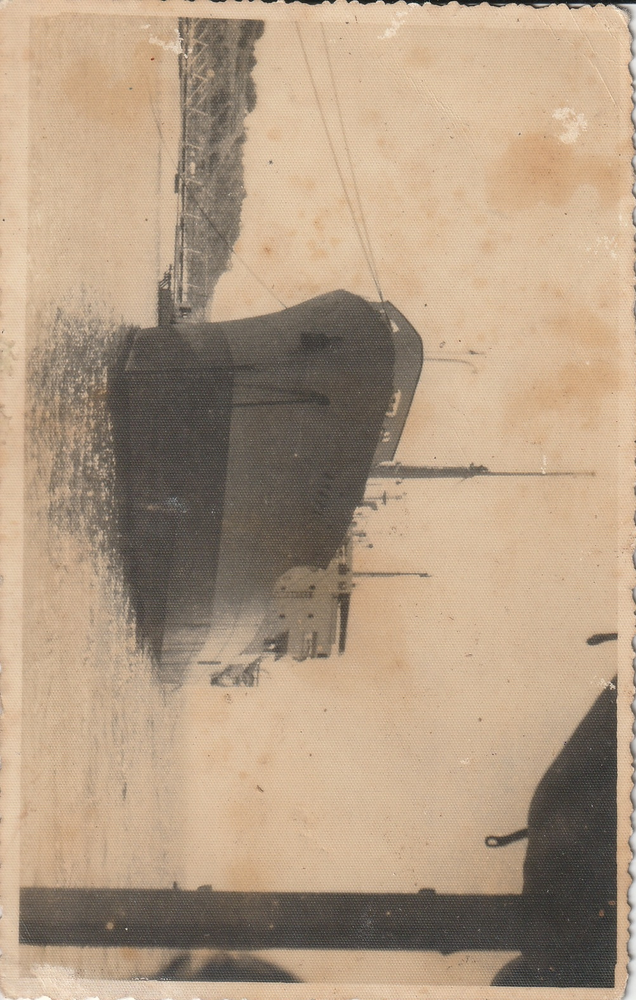
Navio. Ambiente de trabalho de Valdir
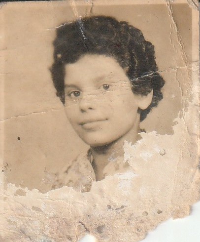
Nena
 Osmarina e Ademar
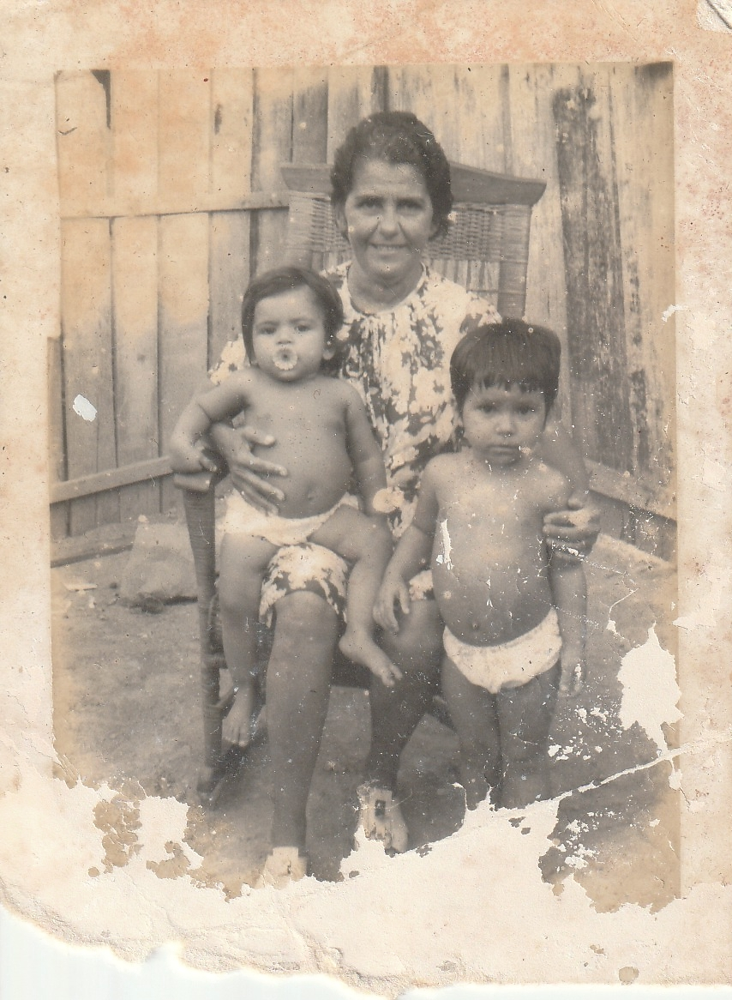
Osmarina e Ademar
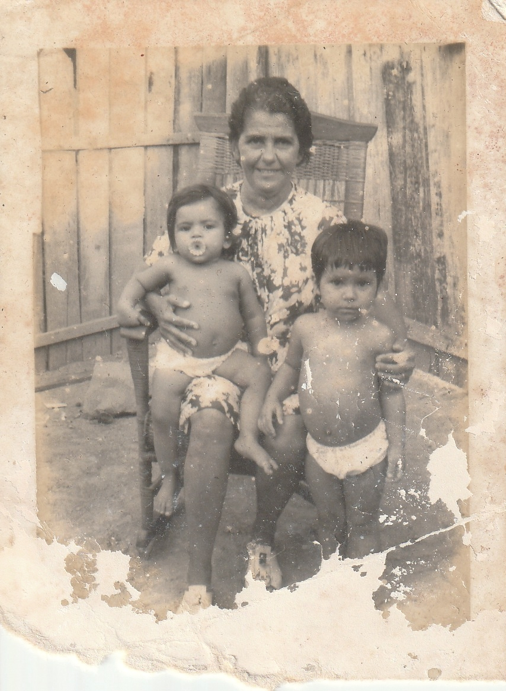
 Valdenice, Valdeni, Carlos Alberto e Alberto Carlo
Valdenice, Valdeni, Carlos Alberto e Alberto Carlo
 Valdir e Cleame no colo
Valdir e Cleame no colo
 Valdir Sentado
Valdir Sentado
 Valdir, Raimunda, Ana Oscarina no colo e Ademar
Valdir, Raimunda, Ana Oscarina no colo e Ademar
.jpg) Valdira
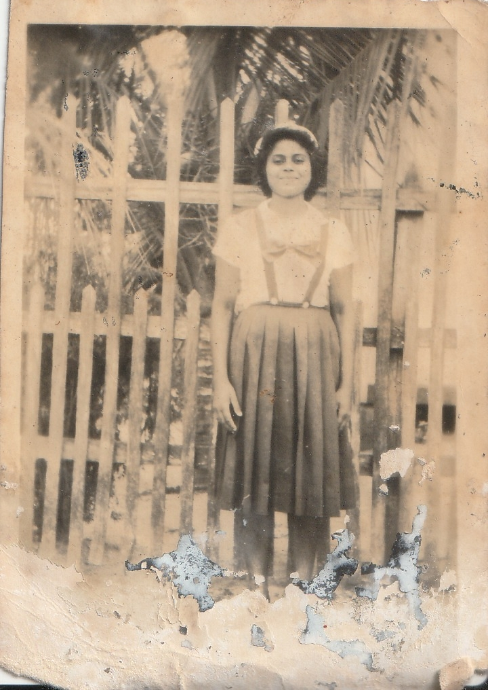
Valdira
Valdira
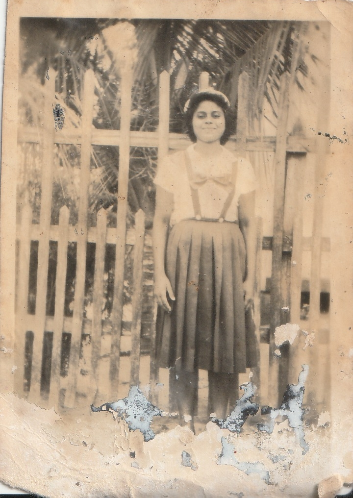
Valdira
 Valdira e Filhos e Netos de Ana Oscarina
Valdira e Filhos e Netos de Ana Oscarina
 Zé Ubaldo
Zé Ubaldo
 Raimunda, Emanuel, Valdir, Maria Castro, Ieda, Pedro, Cleame e Ana Oscarina
Raimunda, Emanuel, Valdir, Maria Castro, Ieda, Pedro, Cleame e Ana Oscarina